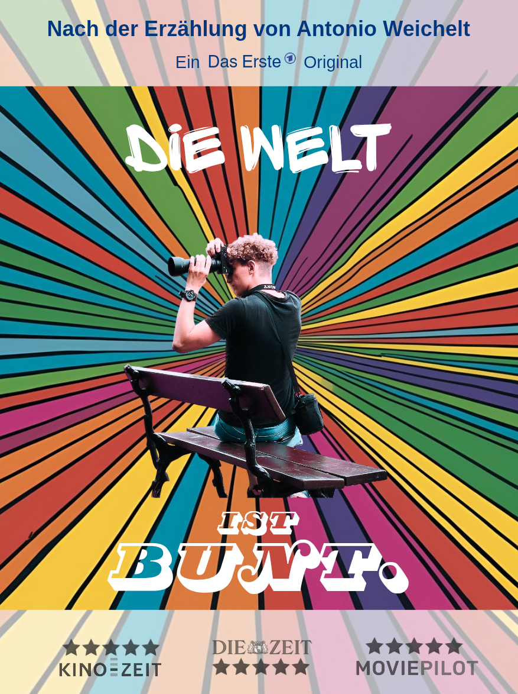

Filmrezensionen
Filmrezensionen
Filmrezensionen
Filmrezensionen

„Die Welt ist bunt.“ ist ein tiefgründiges Drama, das die Zerbrechlichkeit junger Leben eindrucksvoll beleuchtet. Regisseur Antonio Weichelt schafft es, mit schmerzlicher Präzision die chaotische Welt der Hauptfigur zu entwirren, die zwischen Selbstzweifeln und Verlangen nach Veränderung hin- und hergerissen ist. Die Darstellung der zerrissenenen Protagonisten ist ebenso intensiv wie authentisch und bringt die innere Zerrissenheit perfekt zum Ausdruck.
Der Film glänzt durch eine visuelle Schärfe, die jede Szene zu einem erdrückenden Erlebnis macht, unterstützt von einem Soundtrack, der die Stimmung perfekt einfängt. Weichelt lässt es zu, dass der Zuschauer die Wut, die Angst und auch die leisen Momente der Hoffnung unmittelbar mitfühlt. „Die Welt ist bunt“ ist ein fesselnder Film, der sowohl verstört als auch aufrüttelt und lange nach dem Abspann im Kopf bleibt.
Da bisher nur das führende Poster veröffentlicht wurde, bleiben wir gespannt.